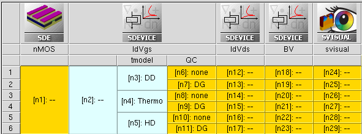

Sentaurus Device
2. Carrier Transport Models
2.1 Overview
2.2 MOSFET Device Simulation With Different Carrier Transport Models
2.3 Monte Carlo Transport
Objectives
- To present various carrier transport models and their applications.
2.1 Overview
This section introduces various carrier transport models, namely, drift-diffusion, thermodynamic, hydrodynamic, and Monte Carlo transport, as well as quantum transport, based on the density gradient model. These models are applied in different situations depending on the requirement of the application.
All Sentaurus Device command files are featured in a complete Sentaurus Workbench project in the directory Applications_Library/GettingStarted/sdevice/TransportModels.
In this project, three typical MOSFET device characteristics – transfer (Id–Vgs), output (Id–Vds), and off-state breakdown – are simulated with different carrier transport models. In addition, the effect of carrier quantization in the transistor channel is demonstrated.
To run the project, copy it into a directory that resides under the Sentaurus Workbench working directory to which the environment variable $STDB points. For details about this environment variable, see Section 1.2 Starting Sentaurus Workbench.
After copying the project, open it in Sentaurus Workbench by choosing Project > Open or double-clicking the project icon.
The project uses Sentaurus Workbench features discussed in the Sentaurus Workbench module as well as in Section 10. Running Sentaurus Device in Sentaurus Workbench. To view the preprocessed command file for each individual transport model, highlight the corresponding node and choose Extensions > Compare Command Files of Selected Nodes.
The FinFET device simulation using the Monte Carlo approach is discussed in Section 2.3 Monte Carlo Transport.
2.2 MOSFET Device Simulation With Different Carrier Transport Models
A MOSFET electrical device simulation with three different carrier transport models is considered in the Applications_Library/GettingStarted/sdevice/TransportModels project:
- The drift-diffusion model (DD) solves self-consistently the Poisson and the carrier continuity equations in the designated device regions with specified boundary conditions.
- The thermodynamic model (Thermo) extends the drift-diffusion approach to account for electrothermal effects under the assumption that charge carriers are in thermal equilibrium with the lattice. In practice, it solves the lattice temperature (heat flow) equation in addition to the Poisson equation and the carrier continuity equations.
- The hydrodynamic model (HD) solves the carrier temperature and the heat flow equations in addition to the Poisson and the carrier continuity equations.
In the Sentaurus Workbench project shown in Figure 1, to activate a particular transport model, the parameter tmodel is introduced, whose value decides which model to use. In addition, carrier quantization can be switched on or off for each transport model in use, by setting the corresponding value of the project parameter QC.

Figure 1. MOSFET device simulation with different transport models organized within Sentaurus Workbench project.
2.2.1 Drift-Diffusion Transport Model
The drift-diffusion transport model is the default in Sentaurus Device. Therefore, no special keyword is needed to activate the model, which can be applied to arbitrary device simulations, such as MOSFETs and BJTs.
The typical Physics section for MOSFET device simulations with the drift-diffusion model is:
Physics {
Fermi
EffectiveIntrinsicDensity( OldSlotboom )
Mobility(
DopingDep
eHighFieldsaturation( GradQuasiFermi )
hHighFieldsaturation( GradQuasiFermi )
Enormal
)
Recombination(
SRH( DopingDep TempDependence )
)
}
Here, the Fermi keyword activates the carrier Fermi statistics.
The EffectiveIntrinsicDensity statement triggers the bandgap narrowing effect in highly doped regions using the OldSlotboom model, which directly affects the calculation of the intrinsic carrier density in silicon.
The Mobility statement defines the carrier mobility models, which include electron or hole mobility degradation due to high doping (DopingDep), carrier velocity saturation for regions with a high electric field (eHighFieldsaturation or hHighFieldsaturation), and mobility degradation at semiconductor–insulator interfaces (Enormal). The GradQuasiFermi driving force for the high-field saturation (HFS) model is used for both carrier velocities.
In addition, doping- and temperature-dependent Shockley–Read–Hall (SRH) recombination is activated within the Recombination statement.
The set of drift-diffusion model equations to be solved includes the Poisson equation and the carrier continuity equations for electrons and holes. Typically, these equations are solved self-consistently using the Coupled statement inside the Solve section:
Solve {
...
Coupled {Poisson Electron Hole}
...
}
2.2.2 Thermodynamic Transport Model
The thermodynamic transport model is required in case considerable self-heating occurs. This includes device operations under high current condition, such as on-state MOSFET or open bipolar device operations. In these regimes, within high-current regions, considerable Joule heat is produced, which leads to a significant rise in the lattice temperature.
Most transport model coefficients, such as carrier mobility and generation–recombination, are functions of the lattice temperature. Therefore, having the correct lattice temperature distribution is necessary to correctly predict the electrical device behavior.
To activate the model, you must specify Thermodynamic in the Physics section:
Physics {
Thermodynamic
...
Recombination(
SRH( DopingDep TempDependence )
)
}
For most of the models (such as carrier mobility), the lattice temperature dependency is taken into account by default. For others such as temperature dependency of SRH lifetimes, it should be activated explicitly.
The heat transport simulations require the heat boundary conditions to be specified in the command file, which is done in the Thermode section where thermodes (thermal electrodes) are defined with the temperature boundary condition assigned to them:
Thermode{
{ Name="top_thermode" Temperature=300 }
{ Name="substrate" Temperature=300 SurfaceResistance=5e-4 }
}
A thermal contact can coincide with an electrode or can be defined as a separate contact. For each thermal contact, a temperature must be declared. The contact can be attached to a material by a thermal resistor, whose value is specified by the SurfaceResistance keyword. This often helps to emulate the realistic layer thermal resistivity without having the full layer included in the simulated device structure. The unit of such a resistor is cm2K/W.
Without a thermal resistor, the contact is kept always at the declared temperature. Note that, at the external device boundaries without a thermode, the reflective boundary condition (zero heat flow) is applied by default.
The keyword Temperature inside the Coupled statement specifies that the lattice heat equation should be solved self-consistently with the drift-diffusion transport equations. As a result, the nonuniformly distributed lattice temperature profile can be seen inside the device:
Solve {
Coupled{ Poisson Electron Hole Temperature }
}
To plot the resulting heat-related quantities, corresponding dataset names must be placed in the Plot section:
Plot {
...
*--Heat quantities
Temperature TotalHeat eJouleHeat hJouleHeat
}
2.2.3 Hydrodynamic Transport Model
The hydrodynamic transport model solves the carrier temperature and the lattice heat equations in addition to the Poisson and the carrier continuity equations.
The essentials of the hydrodynamic transport model are:
- The model is especially useful in simulating deep-submicron and heterostructure devices. It allows nonlocal effects to be included in the simulation, such as velocity overshoot, which can drastically alter device performance.
- For a device breakdown simulation, the use of the hydrodynamic transport model avoids the onset of premature breakdowns due to the local field, assumed in the drift-diffusion model.
- Hydrodynamic carrier transport is used typically for heterostructure device simulations where the energy transport across heterointerfaces plays an important role.
To activate the model, you must specify Hydrodynamic in the Physics section:
Physics {
Hydrodynamic
...
Mobility(
DopingDep
HighFieldsaturation( CarrierTempDrive )
Enormal
)
}
If you use HighFieldSaturation, avalanche, or the classical lucky electron model, then you should activate carrier temperature as the driving force for self-consistency.
To solve the electron or hole carrier energy and lattice heat equations self-consistently with carrier transport, the keywords eTemperature, hTemperature, and Temperature must be added to the solved equation set in the Coupled statement:
Solve {
Coupled{ Poisson Electron Hole eTemperature hTemperature Temperature }
}
If only one carrier temperature equation must be solved, Hydrodynamic must be specified with the appropriate parameter, either Hydrodynamic(eTemperature) or Hydrodynamic(hTemperature):
Physics {
Hydrodynamic(eTemperature)
...
Mobility(
DopingDep
eHighFieldsaturation( CarrierTempDrive )
hHighFieldsaturation( GradQuasiFermi )
Enormal
)
}
With the above definitions, only the electron carrier transport is simulated using the hydrodynamic transport model, while the hole transport is simulated using the drift-diffusion transport model.
The qualifier CarrierTempDrive in the eHighFieldsaturation statement activates the carrier temperature as a driving force for electrons in the high-field saturation model. For holes, the GradQuasiFermi driving force is used.
If only single-carrier energy transport is considered, such as in the previous Physics section, one of the keywords (hTemperature in this case) can be omitted. In addition, to deactivate the effect of lattice heating, the lattice heat equation, activated with the Temperature keyword, must not be included in the equation set inside the Coupled statement:
Solve {
Coupled{ Poisson Electron Hole eTemperature }
}
To plot the resulting quantities, corresponding dataset names must be placed in the Plot section:
Plot {
...
Temperature eTemperature hTemperature
}
2.2.4 Carrier Quantization With Density Gradient Model
The density gradient (DG) model, in addition to the Schrödinger carrier quantization model, provides the most physically accurate solution and can be recommended as the model of choice to account for carrier quantization effects in transistor channels and at heterointerfaces.
In the DG approximation, the quantum potential is a function of the carrier densities and their gradients, which requires the self-consistent quantum potential and the carrier transport equations solution. The DG model can be applied to 2D and 3D device simulations.
The keywords eQuantumPotential and hQuantumPotential activate the DG model for electrons and holes, respectively. If a transistor operates under a channel inversion regime, only quantum correction for minority carriers (electrons) can be considered to reduce the task complexity:
Physics{
eQuantumPotential
...
}
To solve the electron quantum-potential equation, you must include the eQuantumPotential keyword in the corresponding Coupled statements:
Solve {
...
Coupled{ Poisson Electron Hole eQuantumPotential }
...
}
To plot the quantum-potential profile and related quantum-corrected quantities, you must specify them in the Plot section:
Plot{
eDensity
BandGap BandGapNarrowing Affinity ConductionBand ValenceBand
eQuantumPotential
}
2.2.5 Transfer (Id–Vgs) MOSFET Device Simulation
The Id–Vgs transfer characteristic is the first MOSFET device characteristic simulated in the Applications_Library/GettingStarted/sdevice/TransportModels project.
Click to view the corresponding command file IdVgs_des.cmd.
In this file, the model selector, the set of transport equations, and the driving force for the velocity saturation in the high electric field model are decided according to a value of the project parameter tmodel:
#if "@tmodel@" == "DD" #define _Tmodel_ * DriftDiffusion #define _DF_ GradQuasiFermi #define _EQUATIONSET_ Poisson Electron Hole #elif "@tmodel@" == "HD" #define _Tmodel_ Hydrodynamic(eTemperature) #define _DF_ CarrierTempDrive #define _EQUATIONSET_ Poisson Electron Hole eTemperature Temperature #elif "@tmodel@" == "Thermo" #define _Tmodel_ Thermodynamic #define _DF_ GradQuasiFermi #define _EQUATIONSET_ Poisson Electron Hole Temperature #endif
To switch on the DG model to account for carrier quantization in the channel, the value of the QC project parameter is checked out:
#-- quantum correction #if "@QC@" == "DG" #define _QC_ eQuantumPotential #else #define _QC_ #endif
The applied drain bias and the initial gate bias conditions are defined explicitly using the Sentaurus Workbench #define command:
#define _Vdd_ 1.1 #define _Vginit_ -1.
For simulations with the thermodynamic and hydrodynamic transport models, at least one thermal contact must be specified in the Thermode section, where a thermal boundary condition is defined:
Thermode{
{ Name="substrate" Temperature=300 SurfaceResistance=5e-4 }
...
}
There are two Quasistationary statements in the Solve section. The first statement ramps the drain voltage from 0 V (as defined in the Electrode section) to a value given by the _Vdd_ macro definition. Similarly, the second statement sweeps the gate bias from the initial value _Vginit_ to the value given by the expression @<2.*_Vdd_>@ (2.2 V):
Solve {
*- Build-up of initial solution:
NewCurrentPrefix="init_"
Coupled(Iterations=100){ Poisson _QC_ }
Coupled{ _EQUATIONSET_ _QC_ }
*- Bias drain to target bias
Quasistationary(
InitialStep=0.01 MinStep=1e-5 MaxStep=1
Goal{ Name="drain" Voltage= _Vdd_ }
) { Coupled { _EQUATIONSET_ _QC_ } }
*- gate voltage sweep
NewCurrentPrefix="IdVgs_"
Quasistationary(
InitialStep=1e-3 MinStep=1e-5 MaxStep=1
Goal{ Name="gate" Voltage= @<2.*_Vdd_>@ }
) { Coupled { _EQUATIONSET_ _QC_ }
CurrentPlot(Time=(Range=(0 1) Intervals=20))
}
System("rm init_n@node@_des.plt")
}
Two NewCurrentPrefix statements are used to separate the voltage and current output files (*_des.plt) generated by two quasistationary sweeps. Each statement produces one file with a unique name and the .plt file extension, which can be loaded into Sentaurus Visual for visualization. The given name is extended by a construction, which includes the corresponding project node number, such that Sentaurus Workbench can distinguish the resulting file if it needs to be cleaned up.
At the end of the simulation, one of these files is removed using the System command call.
The CurrentPlot statement ensures that the resulting I–V curve is equidistantly resolved by a given number of intervals, provided in the Intervals statement. However, internally, Sentaurus Device can compute intermediate steps to achieve convergence.
The carrier distributions across the channel, with and without carrier quantization, are shown in Figure 2 at strong inversion conditions.
{kind=link}
Figure 2. Electron density profile in the center of the channel, taken under strong inversion gate bias conditions. Quantum-mechanical size quantization, applied under QC=DG condition, leads to an electron concentration peak shifted away from the silicon–oxide interface by a distance of approximately 0.8 nm. (Click image for full-size view.)
In Figure 3, Id–Vgs curves computed with different transport models are compared, having carrier quantization switched on or off. The effect of the current decrease in the device on-state mode is clearly seen in the case of the thermodynamic or hydrodynamic transport models, where the electron mobility is affected by the lattice heat. For all models taking into account the carrier quantization in the channel, a smaller on-state current can be observed due to the reduced carrier concentration in the channel.
{kind=link}
Figure 3. Id–Vgs curves computed with different carrier transport models. Solid lines: without carrier quantization. Markers: with carrier quantization. (Click image for full-size view.)
2.2.6 Output (Id–Vds) MOSFET Device Simulation
The Id–Vds output characteristic is the second MOSFET device characteristic simulated in the Applications_Library/GettingStarted/sdevice/TransportModels project.
Click to view the corresponding command file IdVds_des.cmd.
Similar settings are used here to simulate the MOSFET Id–Vds output characteristic for a given gate bias. The fixed gate bias and the target drain bias (up to which the drain voltage is swept) are defined explicitly using the Sentaurus Workbench #define command:
#define _Vdd_ 2. #define _Vginit_ 1.
After obtaining the initial guess solution, the drain bias is ramped within the Quasistationary statement from 0 V (as defined in the Electrode section) up to the _Vdd_ bias value:
Solve {
*- Build-up of initial solution:
NewCurrentPrefix="init_"
Coupled(Iterations=100){ Poisson _QC_ }
Coupled{ _EQUATIONSET_ _QC_ }
*- drain bias sweep
NewCurrentPrefix="IdVds_"
Quasistationary(
InitialStep=1e-3 MinStep=1e-5 MaxStep=1
Goal{ Name="drain" Voltage= _Vdd_ }
) { Coupled { _EQUATIONSET_ _QC_ }
CurrentPlot(Time=(Range=(0 1) Intervals=20))
}
System("rm init_n@node@_des.plt")
}
The points on the resulting I–V curve are distributed equidistantly using the CurrentPlot statement within the Quasistationary command.
In Figure 4, Id–Vds curves computed with different transport models are compared, having carrier quantization switched on or off. The negative differential resistance effect can be seen for the I–V curves, computed with the thermodynamic and hydrodynamic transport models, due to the electron mobility affected by the lattice heat.
{kind=link}
Figure 4. Id–Vds curves computed with different carrier transport models. Solid lines: without carrier quantization. Markers: with carrier quantization. (Click image for full-size view.)
Figure 5 shows the resulting lattice temperature distribution, obtained with the thermodynamic carrier transport model.
{kind=link}
Figure 5. Temperature distribution in MOSFET at Vgs = 1 V and Vds = 2 V bias conditions, obtained after thermodynamic transport model simulation. (Click image for full-size view.)
Figure 6 shows the resulting lattice and electron temperature distributions, obtained with the hydrodynamic carrier transport model.
{kind=link}
Figure 6. (Left) Lattice temperature and (right) electron temperature distributions in MOSFET at Vgs = 1 V and Vds = 2 V bias conditions, obtained after hydrodynamic transport model simulation. (Click image for full-size view.)
2.2.7 MOSFET Off-State Breakdown Simulation
The off-state breakdown is the third MOSFET device characteristic simulated in the Applications_Library/GettingStarted/sdevice/TransportModels project.
Click to view the corresponding command file BV_des.cmd.
In this file, the same settings are applied to the set of transport equations, according to a model selector tmodel. In addition, the corresponding driving force for the avalanche model is assigned according to the _AvaDF_ macro variable:
#if "@tmodel@" == "DD" #define _Tmodel_ * DriftDiffusion #define _DF_ GradQuasiFermi #define _AvaDF_ GradQuasiFermi #define _EQUATIONSET_ Poisson Electron Hole #elif "@tmodel@" == "HD" #define _Tmodel_ Hydrodynamic(eTemperature) #define _DF_ CarrierTempDrive #define _AvaDF_ CarrierTempDrive #define _EQUATIONSET_ Poisson Electron Hole eTemperature Temperature #elif "@tmodel@" == "Thermo" #define _Tmodel_ Thermodynamic #define _DF_ GradQuasiFermi #define _AvaDF_ GradQuasiFermi #define _EQUATIONSET_ Poisson Electron Hole Temperature #endif
For the drift-diffusion and thermodynamic carrier transport models, the gradient of the quasi-Fermi level is used as a driving force for both the high-field saturation (HFS) model and the avalanche model.
In the case of the hydrodynamic transport model, the electron carrier energy (solution variable) is used to compute the effective field, used as a driving force for the HFS and avalanche models (keyword CarrierTempDrive). For holes, which are assumed to be in thermal equilibrium with the lattice, the gradient of the quasi-Fermi level is used as a driving force.
Several numeric parameters, relevant to the off-state breakdown simulation, are used in this project, including:
- A parameter that controls the driving-force smoothing between the gradient of the quasi-Fermi and the electric field (RefDens_e/hGradQuasiFermi_ElectricField).
- A break criterion that determines at which current level to stop the simulation
(BreakCriteria{ Current(Contact="drain" AbsVal=1e-3)). - DirectQuantumCorrection specifies to apply the quantum potential correction directly to the electrostatic potential as a quantum-mechanical band edge.
- RefDens_QuantumPotential=1e12 limits the quantum potential correction to densities, higher than the specified reference value. This is helpful for the breakdown regime convergence.
Here is the full list of numeric controls:
Math {
Extrapolate
Avalderivatives
Iterations= 20
Notdamped= 100
Method= Blocked
SubMethod= Pardiso
ErRef(Electron)=1e8
ErRef(Hole)=1e8
Transient= BE
RefDens_eGradQuasiFermi_ElectricField= 1e16
RefDens_hGradQuasiFermi_ElectricField= 1e16
BreakCriteria{ Current(Contact="drain" AbsVal=1e-3) }
-PlotLoadable
RefDens_QuantumPotential= 1e12
DirectQuantumCorrection
}
To compute the device off-state breakdown I–V characteristic, the resistor method is used (see Section 11.5 External Resistor Method). Before the breakdown, the device enters the punch-through mode, which is characterized by the snapback curve.
Simulations including heat transport (thermodynamic, hydrodynamic) show that the device breakdown and postbreakdown behavior are largely affected by the heat. Taking into account the carrier quantization in the channel moves the breakdown point towards smaller values.
The resulting MOSFET off-state Id–Vds curves are compared in Figure 7.
{kind=link}
Figure 7. MOSFET off-state breakdown Id–Vds curves obtained with the drift-diffusion (black curves), thermodynamic (red curves), and hydrodynamic (blue curves) transport models, with carrier quantization in the channel switched on (dots) or switched off (solid lines). (Click image for full-size view.)
2.3 Monte Carlo Transport
This section discusses Monte Carlo transport in detail.
2.3.1 Surface and Channel Orientation Dependency in PFinFETs
Using the single-particle device Monte Carlo engine in Sentaurus Device, a Monte Carlo simulation has two main parts. First, a drift-diffusion simulation is run. Second, based on this, a Monte Carlo simulation is performed. The drift-diffusion simulation yields an electric field that is used in the initial frozen-field simulation of the iteration between a Monte Carlo transport simulation and the solution of the Poisson equation.
The Monte Carlo simulator integrates these density distributions over the entire Monte Carlo window and simulates only the carrier type with the greater integral of the density. Furthermore, the single-particle device Monte Carlo approach assumes that the integrated density of the predominant carrier type is predicted correctly by the drift-diffusion simulation. Consequently, compared to a drift-diffusion simulation, a Monte Carlo simulation changes only the shape of the electrostatic potential and the density distribution, but not the total charge in the Monte Carlo window.
The simulated 2D geometry is a p-type FinFET device. Figure 8 shows the top view of the wafer and the doping profile of the structure. The channel is undoped. The source and drain regions are p-doped to 1e20 cm-3. The doping drops into the active channel part on a Gaussian length scale of 9 nm. The gate length is 50 nm and the fin width is 34.4 nm.
{kind=link}
Figure 8. Top view and doping profile of FinFET. (Click image for full-size view.)
Because of the undoped channel, the quantum-mechanical threshold-voltage shift is negligibly small. Therefore, quantum corrections are not considered in this project.
The complete project can be investigated from within Sentaurus Workbench in the directory Applications_Library/GettingStarted/sdevice/MCpFinFET.
As a first step, the device simulation using the drift-diffusion approach is performed to obtain the electrostatic potential distribution under initial bias conditions.
Click to view the command file DD_des.cmd.
After this step, the device state is saved. The obtained solution is used to start a Monte Carlo simulation, which is performed in the second Sentaurus Device tool instance called SPMC.
Click to view the command file for the Sentaurus Device tool instance SPMC SPMC_des.cmd.
The following sections describe parts of this command file.
2.3.2 File Section
File {
Grid= "@tdr@"
Output= "@log@"
Parameter="@parameter@"
Load= "@[relpath n@node|-2@_des.sav]@"
MonteCarloOut = "n@node@_mc"
}
The file n@node|-2@_des.sav is specified to be loaded at the beginning of the simulation and is used as the initial condition for the simulation. The keyword MonteCarloOut determines the prefix of the Monte Carlo output files with the results for the currents.
2.3.3 Monte Carlo Section
MonteCarlo {
Normal2OxideDirection = (@surface@)
ChannelDirection = (@channel@)
SurfScattRatio = 0.85
CurrentErrorBar = 2.0
MinCurrentComput = 10
DrainContact = "Drain" # Name or No. of Drain contact in .tdr
# (count from 0, view with TDX)
SelfConsistent(FrozenQF)
Window = Rectangle[ (-0.5,-0.1)
(0.5, 0.1) ]
FinalTime = 1.5e-06
Plot { Range=(0,50e-06) intervals = 500 }
}
The Normal2OxideDirection = (@surface@) statement specifies that the surface orientation of the PFinFET is parameterized. In this project, two orientations are defined for the simulations: (0 1 1) and (0 0 1).
The ChannelDirection = (@channel@) statement specifies that the channel direction of the PFinFET is parameterized. In the (0 1 1) surface orientation, three channel directions are defined: <0 1 -1>, <1 0 0>, <2 1 -1>. For the (0 0 1) surface orientation, two channel directions are defined: <1 0 0> and <-1 1 0>.
Surface roughness scattering is modeled by a combination of specular and diffusive scattering. The keyword SurfScattRatio = 0.85 refers to the percentage of specular scattering.
The keyword CurrentErrorBar = 2.0 refers to the relative error (in percent) of the drain current, below which the simulation stops.
The MinCurrentComput = 10 keyword specifies the minimum number of iterations after steady state that are performed irrespective of whether the relative error of the drain current is less than CurrentErrorBar.
The keyword SelfConsistent(FrozenQF) defines the Monte Carlo simulation as self-consistent. FrozenQF defines the parameters that are frozen during the Poisson solve. For stability reasons, these must be the quasi-Fermi potentials (QF).
The Window = Rectangle[(-0.5, -0.1) (0.5, 0.1)] keyword specifies that the Monte Carlo simulation is performed in all elements that lie completely inside the defined rectangle (where (-0.5, -0.1) (0.5, 0.1) specify the corners of the rectangle).
The keyword FinalTime = 1.5e-06 is the simulation time after which the steady state is assumed to be reached. The gathering of cumulative averages begins only after FinalTime.
Plot {Range=(0,50e-06) intervals = 500} specifies the times after which the Poisson equation is solved. Range=(0,50e-06) refers to Range, where start and end are floating-point values that denote the start time and the maximum simulation time, respectively. start must be zero here.
2.3.4 Math Section
Math {
Number_of_Threads = 8
Method=blocked
Submethod=pardiso
Digits=6
Extrapolate
Derivatives
Iterations=20
Notdamped=50
}
The keyword Number_of_Threads = 1 specifies the number of threads to be used in parallel. Performance can improve considerably by increasing the number of threads.
2.3.5 Solve Section
solve {
coupled {poisson hole }
montecarlo
}
The keyword montecarlo can be specified at any point in the Solve section like a partial differential equation. It cannot be coupled to any of the partial differential equations, but it can be used in quasistationary simulations.
Figure 9 shows the Monte Carlo simulation results. The on-state current is plotted as a function of the channel direction and the surface orientation. It highlights that a (0 1 1) surface orientation coupled with a <1 0 0> channel direction is advantageous for PFinFET devices.
This is the consequence of two physical effects:
- Specular scattering is determined by the conservation of energy and a parallel wavevector. The orientation of the band structure, relative to the interface with a (0 1 1) direction, involves a higher low-field mobility.
- However, high-field transport of holes is enhanced for a driving field in the <1 0 0> direction.
{kind=link}
Figure 9. On-state current as a function of channel direction and surface orientation. (Click for full-size view.)
The files with the simulation results of the currents are n@node@_mc_time.plt and n@node@_mc_average.plt. They contain estimates of the current at the contact that was specified by the DrainContact keyword (called MCdrain in the .plt file) as well as the integral of the impact ionization rate over the entire Monte Carlo window (called MCsubstrate). In n@node@_mc_time.plt, the current estimates, which correspond only to one iteration interval, are stored as a function of the simulation time.
{kind=link}
Figure 10. Drain-current estimations as a function of simulation time for the two defined surface orientations (0 0 1) and (0 1 1), and the same channel direction <1 0 0>. The stationary state and the current begin to fluctuate around its average value. (Click image for full-size view.)
In contrast, the file n@node@_mc_average.plt contains the cumulative averages over the current values stored in the n@node@_mc_time.plt file. They are plotted as a function of the number of iterations after reaching the stationary state.
{kind=link}
Figure 11. Cumulative average over the drain-current estimations as a function of the number of iterations for the two defined surface orientations (0 0 1) and (0 1 1), and the same channel direction <1 0 0>. (Click image for full-size view.)
In addition, the relative errors of these averages can be extracted from n@node@_mc_average.plt.
{kind=link}
Figure 12. Error of these averages as a function of the number of iterations. (Click image for full-size view.)
These errors represent reasonable criteria for stopping the simulation when the gathering of statistics begins after reaching the stationary state.
The results contained in n@node@_mc_time.plt and n@node@_mc_average.plt can be viewed using Sentaurus Visual.
For more information about the surface direction and channel direction dependencies, refer to the Sentaurus™ Device Monte Carlo User Guide.
Copyright © 2022 Synopsys, Inc. All rights reserved.